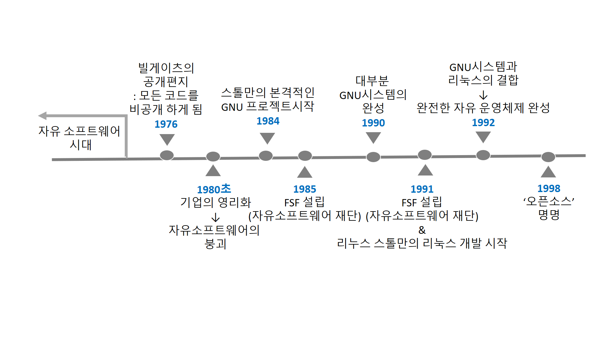
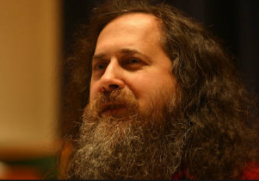
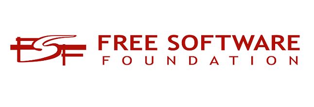
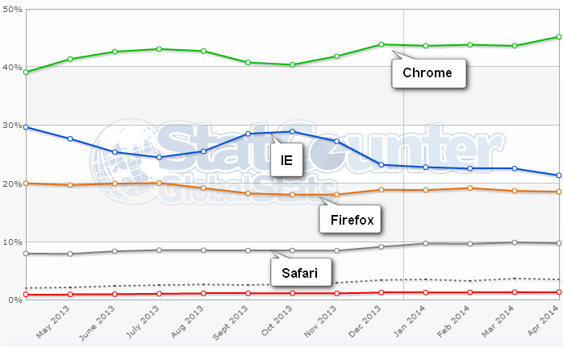
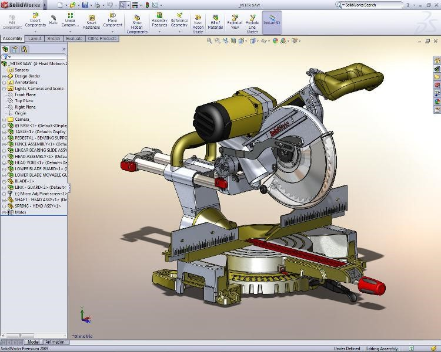

2.오픈소스의 역사
- 오픈소스의 과거
- 초기 자유소프트웨어와 기업의 영리화
- UNIX와 GNU프로젝트
- 리눅스와 오픈소스 커뮤니티의 탄생
- 오픈소스의 현재
- 오픈소스의 발전
- 현대의 오픈소스
- 오픈소스의 미래
2.1오픈소스의 과거
- 초기 자유 소프트웨어와 기업의 영리화
초기 자유 소프트웨어에 대한 리처드 스톨만의 철학은 1971년 MIT 대학의 인공지능 연구소에서 소프트웨어를 공유하는 공동체의 일원이 되면서 시작되었다.
당시에는 아직 자유소프트웨어라는 정의는 없었지만, 연구원들이 만들었던 소프트웨어의 모습은 지금의 ‘자유 소프트웨어’가 의미하는 그것이었다.
다른 대학이나 기업에서 연구원들이 만든 프로그램을 요청하거나 다른 시스템에 이식하기 위해서 도움을 요청할 때면 언제든지 프로그램을 빌려주는 방식이 일반적인 것이기에 흥미로운 프로그램을 사용하는 사람이 있으면 얼마든지 소스 코드를 보여 달라고 요청할 수 있었다.
이 시절은 소스코드를 자유롭게 공유했기에 프로그램을 수정하거나 해당 프로그램을 기반으로 발전시킬 가능성이 풍부했던 것이다.
하지만 1980년대 초, DEC사가 P-10시리즈의 생산을 중단하며 공동체는 붕괴되었다. 1960년대를 차지했던 PDP-10 시리즈도 1980년대가 되며 시대의 발전 흐름에 따라 구조적 한계를 직면하고 DEC사는 PDP-10 시리즈의 생산을 중단했다.
이는 ITS 환경에서 만들어진 모든 프로그램이 호환성의 문제로 더 이상 사용될 수 없음을 의미했다. 인공지능 연구소를 주축으로 모인 공동체도 PDP-10과 함께 붕괴해 1981년에는 대부분의 인원이 직장을 옮기게 되었다.
해커들의 이직에 따라 공동체를 유지할 인원이 없어지고, ITS가 아닌 자유 운영체제가 아닌 DEC의 운영 체제를 도입하는 데까지 이르렀다.
당시에 사용되었던 현대적 모델의 컴퓨터는 전용 운영체제를 탑재했는데, 이들은 자유 소프트웨어가 아니었다.
바이너리 형태의 프로그램조차 관련 자료를 유출하지 않겠다는 비공개 계약 조건에 동의해야만 했다.
이는 컴퓨터를 사용하는 처음 단계부터 단절적인, 주위 사람과의 협력을 하지 않겠다며 약속하는 것을 의미했다.
상호 협력적인 공동체의 형성이 불가능해진 것이다. 독점 소프트웨어의 소유자들은 소프트웨어를 공유하는 것을 저작권 침해라며 마치 악한 것과 동일시했고, 프로그램에 대한 수정은 전적으로 그들을 통해야 했다.
사용자를 최우선으로 고려한 상식과 윤리를 통해서 이 문제를 판단한 스톨만은 사람의 서로의 도움이 사회를 지탱하는 근간이라 판단했고, 프로그램을 자유롭게 수정하거나 공유해야 한다는 결론에 도달했다. 공동체가 사라짐에 따라 예전처럼 지탱 할 수 없게 되었고, 스톨만은 선택의 기로에 서게 되었다. 첫째는 비공개 협약에 서명하고 동료를 돕지 않을 것을 약속함으로써 독점 소프트웨어의 세계에 합류하는 것이었다.
만약 그랬다면 본인이 만든 소프트웨어 또한 비공개 협약에 의해 배포되었을 것이므로 다른 사람이 동료를 돕지 못하도록 하는 또 하나의 요인이 되었을 것이다.
따라서 스톨만은 사람들을 단절시키고, 세상을 발전시키지 못해 아니 퇴행 시킬 것이라고 판단했다.
그는 MIT 인공지능 연구소와 그에게 제어 프로그램의 소스 코드를 줄 것을 거부했던 사람으로 인하여 프린터의 사용에 곤란을 겪은 경험이 있었기에 이러한 비공개 협약이 가져올 결과를 알고 있었기 때문에 소스 코드를 공유하기를 거부했을 때 그는 결코 같은 일을 다른 사람이 겪게 하지 않겠다고 다짐한 것이다.

<사진1> 리처드 스톨만
2.2오픈소스의 현재
- Unix와 GNU프로젝트

<사진2>GNU symbol <사진3> UNIX logo
스톨만은 공동체를 다시 부활시키기 위해 그가 직접 만들 프로그램이 없을까 라는 생각을 하기에 이르렀다. 제일 먼저 필요한 프로그램은 바로 운영체제였다.
운영체제는 컴퓨터를 사용하기 위해 가장 핵심적인 소프트웨어이다. 따라서자유롭게 사용가능한 운영체제가 있다면 상호 협력적인 해커들의 공동체를 다시 재건할 수 있을 것이며, 누구에게나 공동체에 합류하기를 권유할 수 있었다.
. 또한 운영체제의 구입에 수반되는 ‘재배포를 금지한다’는 등의 계약 조건에 구애 받을 필요가 없어지므로 누구나 자유롭게 컴퓨터를 사용할 수 있게 될 것이었다. 운영체제의 개발자로써 그는 이러한 작업에 필요한 적합한 기술을 갖고 있었다.
그는 새롭게 개발할 운영체제를 유닉스와 호환되도록 만들려 했다. 그렇게 해 기존의 유닉스 사용자들이 손쉽게 적응하고 GNU로 유입될 수 있으리라 생각했기 때문이다. GNU라는 이름은 GNU’s Not Unix, 즉 “GNU는 유닉스가 아니다.”라는 뜻이 되도록 의도적으로 조합해서 만든 것이다.
. 따라서 GNU는 유닉스와 호환되도록 만든 운영체제이지만 유닉스와는 다른 체제임을 알리기 위해 만든 이름이다. 완전한 운영체제를 만든다는 것은 매우 커다란 일에 해당하기 때문에 스톨만은 기존에 존재하던 자유 소프트웨어를 개작하거나 변형해서 시스템을 완성시켜 나갔다.
이러한 방식으로 인해 GNU 시스템은 단순히 GNU 소프트웨어를 모아 놓은 것 이상이 되었다. GNU시스템은 GNU 프로젝트를 통해 구현하려는 유닉스와 호환되는 소프트웨어 시스템 전체를 의미하고, GNU 프로젝트는 이러한 시스템을 구현하기 위해 진행되는 프로젝트 자체를 의미했다.
. 1984년 1월, MIT 연구원직을 사직하고 스톨만은 GNU 소프트웨어를 만들기 시작했다.
그가 MIT를 떠난 이유는 연구원이 개발한 소프트웨어에 대한 저작권을 소속 회사나 학교로 귀속시킬 수 있는 법률에 따라서 MIT 당국이 그의 소프트웨어를 자유 소프트웨어로 만들지 못하게 할 가능성이 있기 때문이다.
스톨만은 1984년 9월부터 GNU Emacs를 만들기 시작해 1985년 초에는 제법 완성된 상태가 되었다. 사람들의 GNU Emacs에 대한 수요가 생길 때 즈음에서 그는 이 에디터를 어떠한 방식으로 배포할 것인가에 의문이 생겼다. 그 당시에는 Emacs에 관심을 가진 사람 중에서 인터넷을 통해 구할 수 있는 사람이 거의 없었기에 어떠한 방식으로 Emacs를 구할지 알려주는 것도 중요한 문제였다.
그는 반송용 우표가 붙어있는 봉투를 테이프와 함께 보내면 PDP-10용 Emacs를 복사해 주겠다고 했다. 즉, Emacs를 배포함에 있어서 금전적인 비용이 청구되지 않는 방법을 말이다
그는 150달러의 비용을 지불하면 누구나 Emacs가 든 테이프를 우성해주는 방식을 생각해내어, 이러한 판매 방식을 통해 자유 소프트웨어를 이용한 사업을 시작하고, 리눅스를 기반으로 한 GNU 시스템 전체를 담은 배포판을 판매하는 현재의 리눅스 배포판 업체들의 시초가 되었다.
GNU의 목적은 GNU를 널리 알리는 것이 아닌, 사용자에게 자유를 주는 것이기에 배포 기준에는 GNU가 독점 소프트웨어로 변질되는 것을 막을 조항이 필요했고, 이를 위해 카피레프트라는 방식을 사용했다.
카피레프트의 핵심은 프로그램을 실행하고 복제할 권리와 함께 개작된 프로그램에 대한 배포상의 별도의 조건을 설정하지 않는다면, 개작과 배포에 대한 권리 또한 모든 사람에게 허용하는 것이다. 즉, 프로그램의 실행, 복제, 개작, 배포의 자유를 허용함으로써 자유 소프트웨어의 핵심인 자유를 보장하고 프로그램을 입수한 사람은 권리를 갖게 되는 것이다.
Emacs의 사용에 대한 관심의 증가에 따라 사람들이 GNU 프로젝트에 참여하기 시작했고, 기금을 모을 적절한 시기가 되었다.
그래서1985년, 자유 소프트웨어의 개발을 위해 자유 소프트웨어 재단을 설립하게 된다.

<사진3> FSF
자유 소프트웨어 재단, FSF는 Emacs의 테이프 배포 사업을 맡고, 점진적으로 다른 소프트웨어도 테이프에 담아 판매했다. FSF는 기부를 받지만 대부분의 운영 자금이 자유 소프트웨어 판매와 관련된 부수적 서비스로 충당된다.
. 자유 소프트웨어가 가진 철학은 만연한 특정한 형태의 상업적 관행을 반대하는 것이지, 상업 행위 자체를 중단시키려는 것은 아니다.
. GNU의 주된 목적은 자유 소프트웨어가 되는 것이다. GNU가 유닉스에 비해 기술적 장점을 갖지 못하더라도, 사용자의 협력을 통해 사회적 이점을 가질 것이고, 사용자의 자유를 존중한다는 윤리적인 이점도 있다.
하지만 우수한 기술의 표준을 GNU에 수용하는 것은 당연한 일이었다. GNU 프로젝트의 명성이 높아짐에 따라 유닉스가 탑재된 시스템을 기증하는 사람이 늘어났다. GNU를 구성하는 프로그램 개발의 가장 쉬운 방법은 유닉스 환경에서 먼저 개발한 뒤 이를 GNU에 맞게 수정하는 것이기 때문에 이러한 시스템은 매우 유용했다.
하지만 기본적인 GNU의 철학은 독점 소프트웨어를 사용하지 않는 것이라 독점 소프트웨어인 유닉스를 통해 자유 소프트웨어를 만든다는 것은 모순이라는 주장이 있었다.
따라서 어느 시점부터 독점 소프트웨어를 사용하지 않기로 결정하고 자유 운영체제를 찾기 시작했다.
에릭 레이먼드는 소프트웨어에 있어서 “모든 성과는 개발자 자신의 가려운 곳을 긁는 것으로부터 시작된다.”라고 주장했다.
이는 타당한 말이지만 GNU 소프트웨어의 핵심 부분은 거의 완전한 자유 운영체제를 만들기 위한 목적을 개발된 것이기 때문에 가려운 곳을 긁기 위해 그때그때 만든 것이 아니라 비전과 계획을 확고하게 가지고 만들어진 것이다.
. 예를 들어 GNU C 라이브러리를 개발한 이유는 유닉스 형태의 운영 환경에서 C라이브러리가 필요해서고, BASH를 개발한 이유는 유닉스 환경이 셸을 요구해서이다. 어떤 프로그램은 자유에 대한 위협에 대처하기 위해 만들어졌다. GNU 프로젝트를 시작할 당시엔 GNU 시스템이 모두 완성된 뒤, 전부를 공개하려 했지만 아래와 같은 이유로 인해 그렇게 되지 않았다.
GNU는 알다시피 유닉스에서 요소를 구현한 뒤 이를 GNU로 옮겼기 때문에 GNU 시스템이 완성되기 전부터 유닉스에서 사용되었다. 이들 중 일부는 유명해져 사용자가 프로그램을 확장하거나 다양한 종류의 유닉스로 이식시켰다. 또한 유닉스 이외에 운영체제로 이식이 되기도 했다.
이러한 과정을 통해 프로그램은 좀 더 강력한 기능을 갖게 되어 기부와 공헌자를 GNU 프로젝트로 끌어들였다. 하지만 이는 GNU 개발자로 하여금 GNU 시스템을 완성시키는 것보다 오히려 기존의 구성 요소에 새로운 기능을 덧붙이거나 다른 시스템으로 이식하는 데 시간을 투자하게 만들어버렸다.
결국 작동 가능한 최소한의 시스템을 완성하는 데 몇 년이 지연되는 결과를 가져왔다.
1990년 무렵 GNU 시스템이 거의 완성되었지만, 운영체제를 구성하는 핵심 부분인 커널이 누락되었다.따라서 프로젝트의 일원들은 MACH를 기반으로 하는 한 서버 프로세스를 연결해 커널을 구현하기로 결정했다. 커널은 운영체제를 구성하는 핵심 요소를 의미하는 말이다.
. MAC는 자율적 프로세스의 집합이며, 유닉스 커널이 가진 다양한 기능을 그대로 수행할 수 있는 것이었다. 현재까지도 GNU HURD(GNU 커널의 명칭)은 하나의 제품으로 사용될 수 있는 상태가 아니다.
하지만 다행스럽게도 1991년, 리누스 토발즈가 유닉스 커널과 호환 가능 하도록 만든 리눅스라는 이름의 커널이 그것이었다. 1년뒤인 1992년, GNU 시스템과 리눅스를 결합시킴으로써 하나의 완전한 자유 운영체제를 만들 수 있었다. 따라서 현재 사용되는 GNU 시스템은 리눅스 덕분에 가능했던 것이었다. 이 시스템을 GNU/Linux라고 부른다.
- 리눅스와 오픈소스 커뮤니티의 탄생
<사진4>리누스 토발즈 <사진5>GNU X Linux
자유 소프트웨어가 만들어지면서 C 컴파일러, 편집기, 디버거, 빌드 도구 등 프로그래밍과 컴퓨터 운영에 필요한 다양한 도구를 개발하면서 진행되다가 실질적인 결실은 리누스 토발즈의 리눅스 커널과의 결합에 의해 완성되었다.
리눅스는 PC에서 사용할 수 있는 운영체제 중 가장 폭넓게 이식된 운영체제이다. 리눅스에서 작동하는 프로그램을 작성하면 그 프로그램이 가장 폭넓은 하드웨어에 대해 한번 작성하여 모든 곳에서 실행하는 것이 가능하다. 리눅스는 유닉스와 비슷한 운영체제지만 유닉스 버전은 아니다.
리눅스는 유닉스와 호환되는 인터페이스를 제공하는 것을 목표로 하고 있으나, 커널은 유닉스 소스 코드를 참고하지 않고 처음부터 새롭게 작성되었다. 따라서 리눅스 자체는 유닉스 포트 중 하나가 아니라 새로운 운영체제이다.
자유 소프트웨어의 확산은 오픈소스의 탄생을 부르는 초석이 되었다. 1991년 리누스 토발즈는 대학에서 교수가 학생들을 상대로 개발한 미닉스를 사용하던 중, 유닉스와 호환되는 공개된 운영체제의 개발 계획을 미닉스 사용자 모임에 발표하였다.
그리고 그는 공개 운영체제에 대해 토론하는 뉴스그룹 ‘comp.os.minix’에 글을 남기면서 오픈소스 시대의 막이 올랐다. 그는 초반에 이 운영체제를 만들면서 거대하고 전문적인 것은 바라지 않고 단지 취미로 만들기 시작했다.
뉴스그룹의 구성원들은 그의 프로젝트에 흥미를 느꼈고 새 운영체제를 만드는 데 힘을 보태기 시작했다. 1991넌 10월 초, 리눅스의 첫 결실인 리눅스 0.02버전이 만들어 졌고 리눅스는 그렇게 인터넷을 통해 확산되면서 전세계 개발자들의 손을 거쳐 유닉스 호환 운영체제로 발전하게 됐다.
리눅스 커널을 만들기 시작했을 때, 최대의 관건은 어떻게 이식성이 뛰어난 시스템을 만들 수 있는가 였다.
여기에 대해 인정받던 학파가 있었는데 그들의 주장은 마이크로 커널 스타일의 아키택처를 사용해야 한다는 것이다.
마이크로 커널은 기존 커널보다 훨씬 적은 연산을 좀 더 제한적인 형태로 수행한다. 상호 프로세스 통신 제한된 프로세스 관리, 스케줄링, 그리고 몇가지 저수준 입출력이 이에 속한다.
1992년 3월 리눅스는 0.95로 버전업 되었고 그래픽 사용자 인터페이스가 추가되었다. 그누 커널로 개발중이던 Hurd의 개발이 순조롭지 않았던 스톨먼과 FSF는 유닉스 커널과 호환 가능한 커널인 리눅스를 그누 시스템의 커널로 채택하였고, 리눅스는 그로 인해 강력한 그누 C 컴파일러인 gcc로 컴파일된 많은 응용 프로그램들을 가지게 되었다.
둘의 결합으로 그누 시스템은 완전한 구조를 갖추게 되었다. 리눅스의 커널 부분은 리누스 주도 하에 계속 개발되었는데, 리누스는 최대한 확장 가능한, 즉 사용자에게 제어권이 있으며 어떠한 인터페이스에도 종속되지 않도록 개발을 이끌고자 하는 의지가 있었다.
따라서 리누스는 그의 글을 통해 리눅스의 성공의 원인을 훌륭한 설계 원칙과 좋은 개발 모델 때문이라고 말하고 있다.
리눅스는 폭넓게 이식하고 사용할 수 있도록 만들고자 했던 원래의 목표 때문이 아니라 훌륭한 설계 원칙과 좋은 개발 모델 기반 때문에 성공할 수 있었다. 이 튼튼한 기반이 이식성과 유용성을 쉽게 달성할 수 있도록 해준 것이다.
1994년 1년 6개월 만에 리눅스 버전 1.0이 발표되었고, 이 전에는 네트워킹 기능이 추가되어 있었다.
이 운영체제는 자유로이 수정될 수 있고 매우 유용한 운영체제를 만들기 위해 FSF 산문과 다른 컴포넌트들과 병합되었다. 리눅스 공동체에서 여러 조직들은 사용할 수 있는 컴포넌트들을 다르게 조합하였는데 각 조합은 '배포판' 으로 부르며 배포판들을 개발한 조직들을 '배포업자' 라고 부른다.
일반적으로 널리 알려진 배포판으로는 레드햇, 맨드레이크, 수제, 칼데라, 코렐, 데비안 등이 있다.
다양한 배포판들 간에는 차이점들이 있지만 모든 배포판들은 동일한 기반인 리눅스 커널 및 그누 라이브러리들에 기초하고 있다.
두가지 모두는 카피라이트 스타일의 라이센스로 다뤄지기 때문에 이러한 기반에 대한 변경은 일반적으로 모든 사람이 사용할 수 있어야 한다. 이는 AT&T 에서 파생된 유닉스 시스템 간에는 존재하지 않는 리눅스만의 기반에서 리눅스 배포판들을 통합시키는 힘이 원천이다.
이 책은 리눅스 배포판에 고유한 것은 아니며 리눅스를 논의할 때 이 책은 본질적으로 모든 현재 주요 리눅스 배포판들에 대해 유효한 가정인 리눅스 커널 버전 2.2 이상과 C라이브러리glibc 2.1 이상을 가정한다.
이 즈음 자유소프트웨어라는 용어에서 오픈소프트웨어로 용어가 변경되는데, ‘자유’ 라는 용어 때문에 일반인들이 무료라고 인식하고 있다는 점, GPL 조항의 엄격성 때문에 소프트웨어 개발이 용이하지 않다는 점을 탈피하기 위해서 였다.
리눅스가 성공을 거두자 에릭 레이먼드는 1997년 상용 소프트웨어의 개발 방식을 성당에, 그누와 리눅스의 소프트웨어 개발 방식을 시장에 비유해 '성당과 시장'이라는 글을 쓴다.
. 중세에 몇몇 건축가들에 의해 만들어지는 성당의 작업방식을 개발자 몇몇이 폐쇄적으로 개발하는 상용 소프트웨어의 개발 방식으로, 사람들이 북적이는 시장은 리눅스처럼 인터넷을 통해 누구나 개발에 참여할 수 있는 개발 방식으로 본 것이다.
. 같은 해 에릭 레이먼드와 브루스 패런스는 OSI(Open Source Initiative)를 설립한다.
OSI는 오픈소스 문화를 활성화 해 기업들의 참여를 이끌려는 목적이었다. 오픈소스는 개작에 대한 동일 이용허락을 강제하지 않는 점을 빼고는 GPL과 비슷했다.
리처드 스톨만은 '자유 소프트웨어와 오픈소스는 대체로 같은 범주의 소프트웨어를 가리키는 말'이라며 소프트웨어 자체와 가치 중에서 무엇을 더 중요하게 생각하는가에 달렸다고 밝힌 바 있다.
- 오픈소스의 발전
리눅스의 성공은 오픈 소스의 협업 모델이 상업적 기업보다 뛰어날 수 있다는 것을 증명했다.
전 세계의 ‘자원봉사자’들이 코드만 100만줄이 넘는, 이 엄청나게 복잡한 컴퓨터 프로그램을 만들고, 기업이 개발한 프로그램을 능가했다. 이는 그 전까지 소프트웨어 역사에서 전례가 없는 일이었다.
이후 기업들은 너도 나도 할 것 없이 오픈소스의 정글에 뛰어들기 시작했다. 말그대로 오픈소스가 소프트웨어 생태계의 ‘대세’가 된 것이다.
안드로이드,클라우드,데이터베이스, 웹서버, 웹브라우저, 컨텐츠 관리 시스템,빅데이터 관리 등 거의 모든 분야에서 높은 점유율을 가지고 있다.
물론 처음부터 그랬던 것은 아니다.
알을 깨고 세상을 처음 접하는 아기새가 그러하듯, 기업들 또한 처음에는 오픈소스의 실효성을 의심했다.
하지만 시간이 흐르면 흐를수록 오픈소스의 강력한 기능성에 하나 둘 기업들이 오픈소스에 투자하기 시작하였고, 현재에 이른다.
공개 소프트웨어를 이용하면 라이선스 비용 절감을 시작으로 하여 전반적인 도입비용, 그리고 더 크게는 TCO를 낮출수 있다.
IDC가 2012년에 발표한 인텔 기반의 리눅스와 RISC기반의 유닉스 서버 간 TCO분석에 따르면 모든 면에서 공개SW의 TCO가 더 낮게 나타났다고 보고하고 있으며, 미국의 시장조사업체인 로버트프랜시스 그룹이 웹 서버를 운영하는 전세계 2천여 개 업체들을 대상으로 조사한 결과 3년간 리눅스 기반웹 서버를 운영 했을 때 윈도우를 사용했을때보다 61%정도 TCO가 낮은 것으로 나타났다.
비용 절감 외, 독점 소프트웨어의 수익 구조 특성 상 유지되는 의존성으로부터 탈피가 있다. 그 예로는 다음과 같은 사례가 있다.
정부의 대 국민 서비스 사이트로부터 사내 시스템에 이르기까지 MS ActiveX 기반으로 제작되어 해외에서는 20% 초반 대에 머무르고 있는 IE사용률이 95%를 넘었다.
이러한 MS윈도우 플랫폼의 독점 상황은 사무 환경에서의 오픈 소스 소프트웨어 사용을 시작 단계부터 가로막는 결정적인 장애물이었고,이에 정부는 미래창조과학부 주관의 웹 표준화 및 오픈 소스 운영체제 도입을 준비하였다. 이후 지속적인 피드백을 통해, 웹 브라우저의 점유율은 점점 IE의 독점에서 벗어나 고르게 퍼졌다.

[2013~14년 Global 웹 브라우저 사용 현황] : 오픈 브라우저 점유율 77%
이런 저런 이유로, 오픈 소스는 소프트웨어계의 강력한 수단이 되었고, 이제 는 기업간 오픈소스 주도권 잡기 전쟁이 진행중이니, IT업종에 뛰어드는 사람이라면 앞으로 더더욱 오픈소스에 눈을 주목해야 할 것이다.
- 현대의 오픈 소스
2018년 6월 4일, 마이크로소프트사에서 GitHub를 인수하기로 결정했다.
인수는 마이크로소프트로써는 당연한 결정이다. 깃허브는 역사상 가장 활발하게 활동이 이뤄지며 약 2,800만 명 가량의 개발자들이 사용하고 있는 웹사이트로, 현재 수십억 개의 오픈소스 코드를 취급하고 있다. MS는 이러한 개발자 커뮤니티에 뿌리를 내리게 될 것이다.
마이크로소프트 사는 역사적으로 봤을 때, 초기에는 오픈 소스에 대해 부정적인 견해를 보였었다.
. 그런 마이크로소프트에서 오픈소스의 커뮤니티의 정수라 할 수 있는 GitHub를 인수했다는 것은, 오픈 소스의 가능성을 바라보고 긴 한 수를 던졌다고 생각할 수 있을 것이다.
그만큼 현재 오픈 소스의 인기는 IT계의 떠오르는 별이라고 해도 과언이 아닐 수준이다.
그렇다면 현재 사용되고 있는 오픈소스 소프트웨어는 어떤 것이 있을까?

- 트러플 프레임워크(Truffle Framework)
스마트 계약은 적절한 툴이 없을 때 개발하기가 매우 복잡하고 진행 속도도 더디다.
다행히도 트러플 프레임워크는 스마트 계약을 개발 및 테스트해 이더리움(Ethereum) 블록체인에 배치하기 위한 트러플(Truffle), 가니쉬(Ganache), 드리즐(Drizzle) 등 일련의 툴을 제공한다.
트러플 CLI는 구성 가능한 다양한 템플릿을 사용해 스마트 계약 프로젝트를 스스로 수행하고 배치할 수 있도록 도와주며, 이후에 구동하고 가니쉬가 제공하는 로컬 이더리움 블록체인에 대해 테스트할 수 있다.
리덕스(Redux) 스토어와의 인터랙션만큼 계약 인터랙션을 간소화하는 자바스크립트 라이브러리인 드리즐을 사용해 새롭게 배치된 계약과 인터랙션하는 UI를 구축한다.
이더리움을 개발할 계획이라면 트러플이 정답이다.
트러플 프레임워크는 2018년 최고의 오픈소스 소프트웨어 대상 부문에 선정되기도 했다.
- 유닉스(UNIX)
우리가 잘 알고있는 운영체제 유닉스 물론 오픈소스 소프트웨어이다.
유닉스는 오픈 소스에서의 역사를 선도한 대표적인 오픈 소스 소프트웨어이다.
오늘날의 유닉스 시스템은 여러 회사들과 비영리 단체들이 이 커널로 활용하여 다양한 운영체제를 개발하고 있다.
현대의 윈도우 계열이 아닌 리눅스, 안드로이드, macOS, iOS 등의 많은 운영 체제가 유닉스를 그 뿌리로 하고 있다. 원래는 멀티유저용 서버 운영체제이나 현재는 개인용 데스크탑이나 임베디드용으로도 쓰인다.
유닉스로부터 파생된 운영체제 :
FreeBSD,다윈,PC-BSD,OpenBSD,NetBSD,오픈 솔라리스, 리눅스 등
- CVS
CVSConcurrent Versions System, 동시 버전 시스템)는 동시 버전관리 시스템(Concurrent Versioning System)으로도 알려져 있으며, 버전 관리 시스템을 구현한다.
보통 소프트웨어 프로젝트를 진행할 때, 파일로 이뤄진 모든 작업과 모든 변화를 추적하고, 여러 개발자(지역적으로 떨어진)가 협력하여 작업할 수 있게 한다.
CVS는 GNU 공중 허가서 하에서 배포된다.
CVS는 오픈 소스 프로젝트에서 널리 사용되었다. 현재는 CVS가 한계를 맞아, CVS를 대체하는 서브버전이 개발되었다.
- QCAD
QCAD에 대해 설명하기 전에, 우선 CAD가 무엇인지부터 설명하자면, CAD는 2D, 3D 그래픽 툴로, 이를 이용하여 제도 및 설계를 한다.
주로 항공기나 자동차 등의 도면을 설계하는 데 사용하며, 기계공학을 공부하는 사람이라면 아마 한번쯤은 써봤을 것이다.

[CAD를 사용하여 3D 그래픽으로 설계하는 사진]